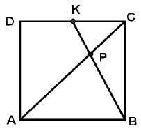
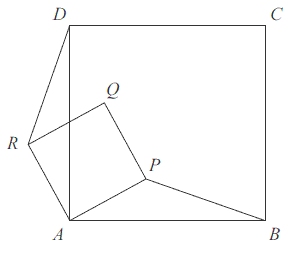

Kwadrat
Oznaczmy bok kwadratu literką \(a\), a przekątną literką \(d\).
Wzór na obwód kwadratu: \[Ob=4a\]
Wzory na pole kwadratu: \[P=a^2\\[6pt] P=\frac{1}{2}d^2\]
Wzór na długość przekątnej kwadratu: \[d=a\sqrt{2}\]
Długość promienia \(r\) okręgu opisanego na kwadracie jest równa \(2\sqrt{3}\).
Długość boku tego kwadratu ma wartość:
A.\( 4\sqrt{3} \)
B.\( 2\sqrt{6} \)
C.\( 4\sqrt{6} \)
D.\( 2\sqrt{5} \)
B
Na dwóch przeciwległych bokach kwadratu o polu \(P\) zaznaczono punkty \(A\) i
\(B\), przy czym punkt \(A\) jest środkiem boku, zaś punkt \(B\) dzieli bok w stosunku \(3:1\), jak
na rysunku obok. Pole zamalowanego czworokąta jest równe:
A.\( \frac{2P}{3} \)
B.\( \frac{5P}{8} \)
C.\( \frac{3P}{4} \)
D.\( \frac{3P}{5} \)
B
Obwód kwadratu wpisanego w okrąg o promieniu \(11\sqrt{2}\) jest równy
A.\( 22 \)
B.\( 44 \)
C.\( 88 \)
D.\( 121\sqrt{2} \)
C
Okrąg opisany na kwadracie ma promień \(4\). Długość boku tego kwadratu jest równa
A.\( 4\sqrt{2} \)
B.\( 2\sqrt{2} \)
C.\( 8 \)
D.\( 4 \)
A
Pole kwadratu wpisanego w okrąg o promieniu \( 5 \) jest równe
A.\(25 \)
B.\(50 \)
C.\(75 \)
D.\(100 \)
B
Pole kwadratu wpisanego w okrąg o promieniu \( 4 \) cm jest równe
A.\(64\) cm2
B.\(32\) cm2
C.\(16\) cm2
D.\(8\) cm2
B
Na boku \(DC\) kwadratu \(ABCD\) obrano punkt \(K\) tak, że \(|DK| = |KC|\) (rys.).
Przekątna \(AC\) kwadratu przecina odcinek \(BK\) w punkcie \(P\). Uzasadnij, że pole trójkąta
\(ABP\) jest czterokrotnie większe niż pole trójkąta \(KCP\). 
Dane są kwadraty: \(ABCD\) i \(CEFG\) (zobacz rysunek poniżej). Wykaż, że
\(|DE|=|BG|\). 
Czworokąty \(ABCD\) i \(APQR\) są kwadratami. Udowodnij, że \(|BP| = |DR|\). 